The character of the brother wearing a basic white tank top is inspired by a similar top that my father wears at home. The brother also wears a “belt” which was made from a string of copper. This also references my father. Due to poverty, my father used to use a copper string as a “belt" since he was too thin to fit in the pants that were passed down from my grandfather. The clothing of the brother thus reflects malnutrition in Vietnam during wartime. Below are preliminary sketches of the brother and the final design.
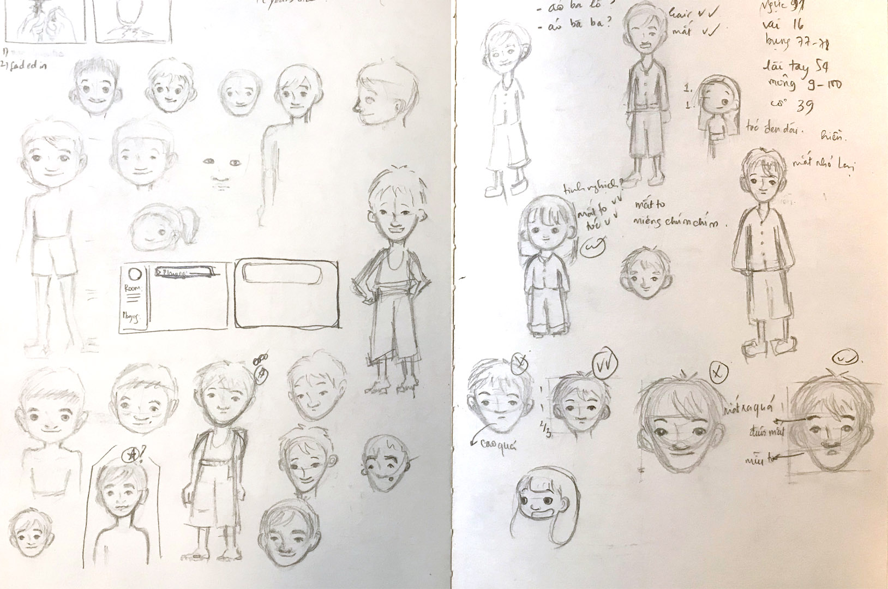 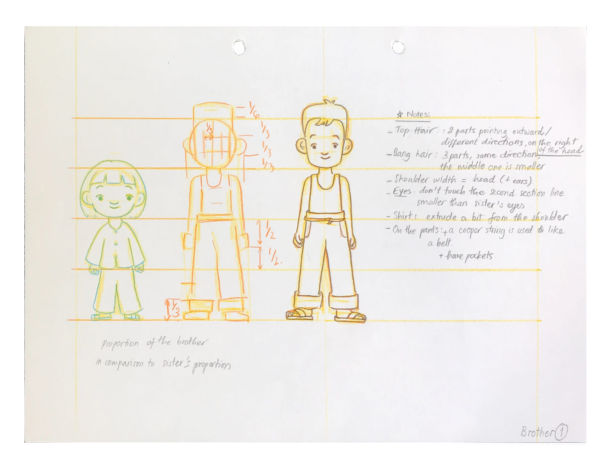 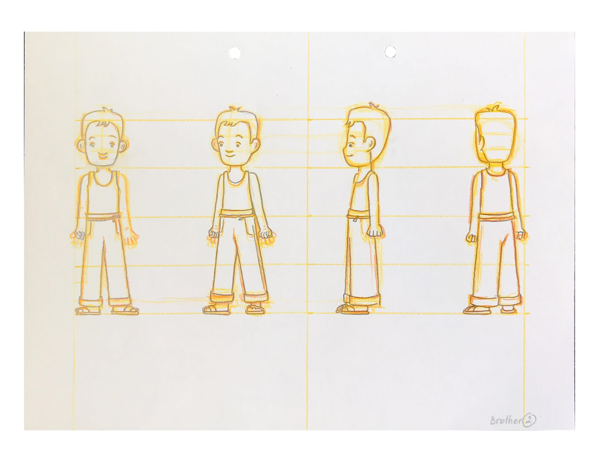 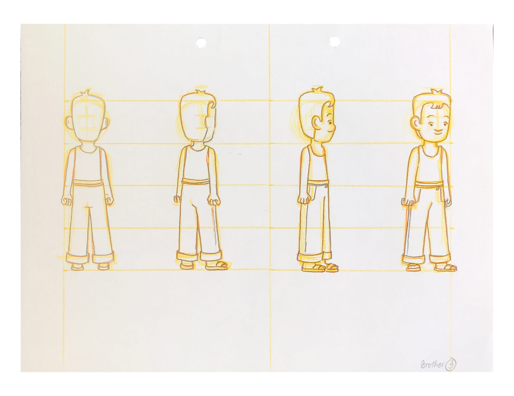 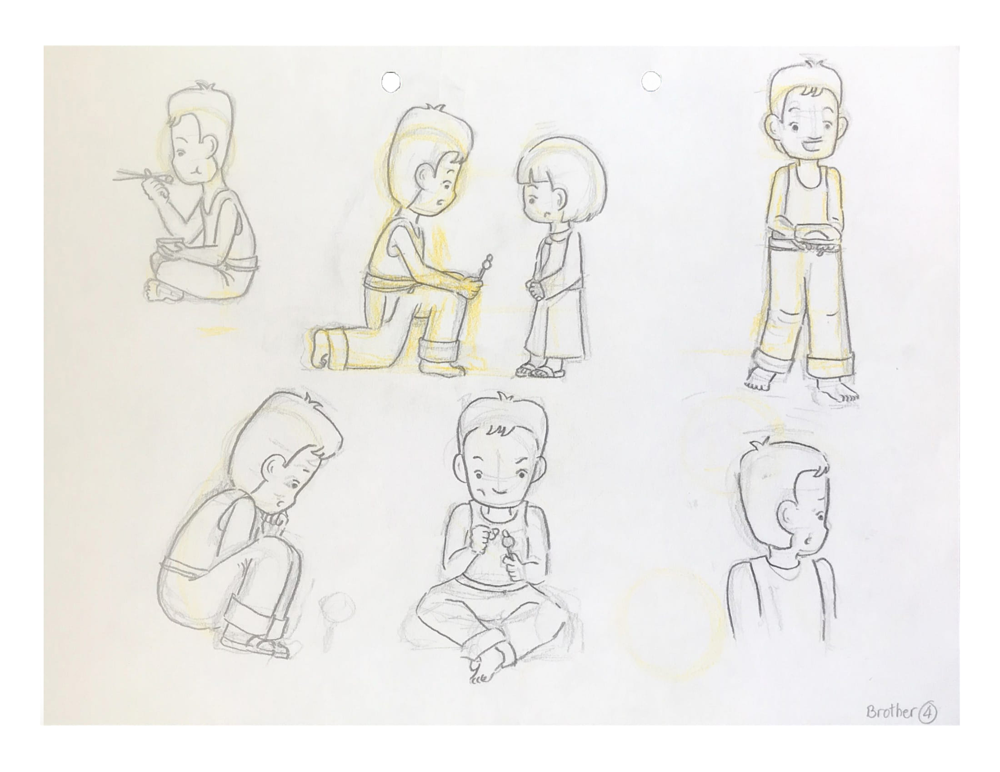The design of the sister was based on my appearance when I was a child in a Vietnamese countryside's outfit. Below are preliminary sketches of the sister and the final design.
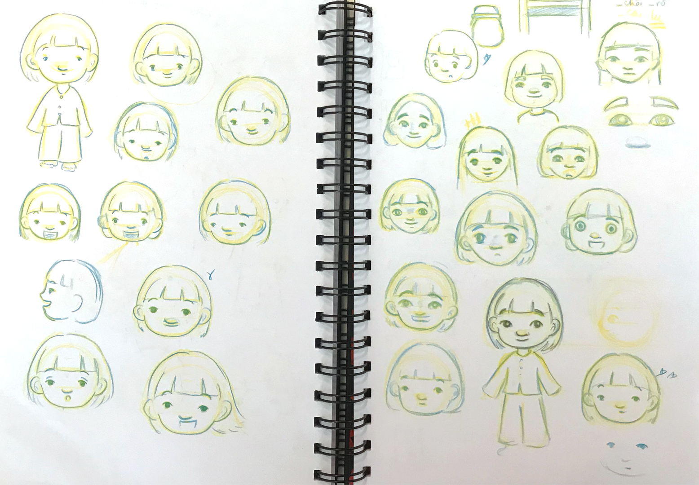 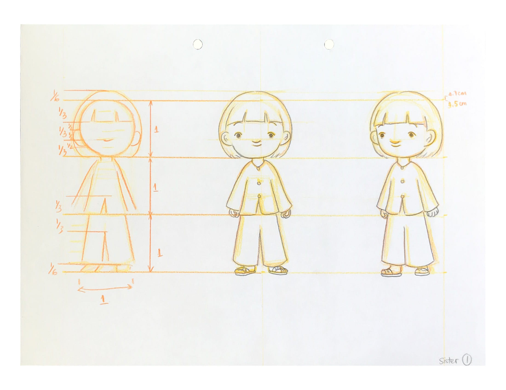 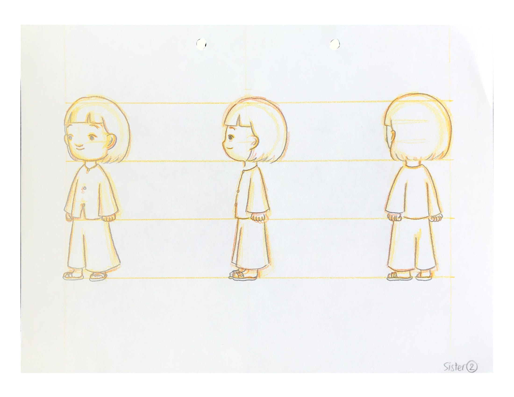 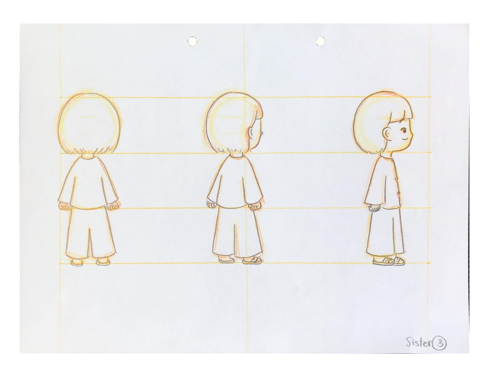 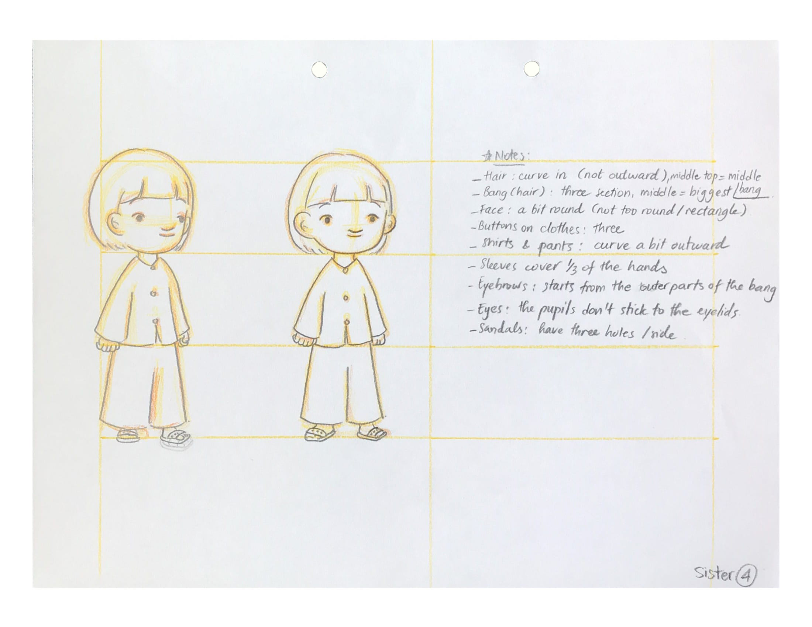 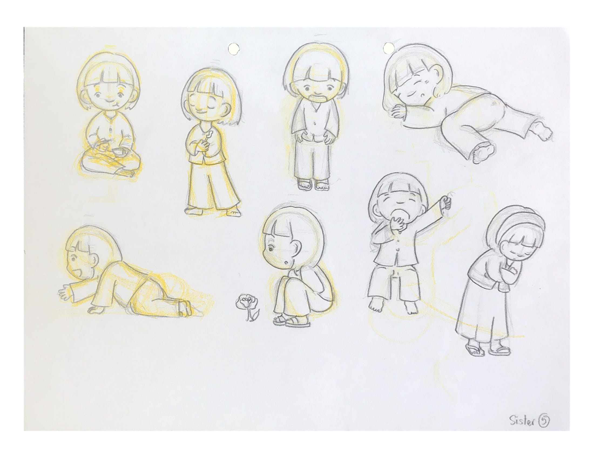